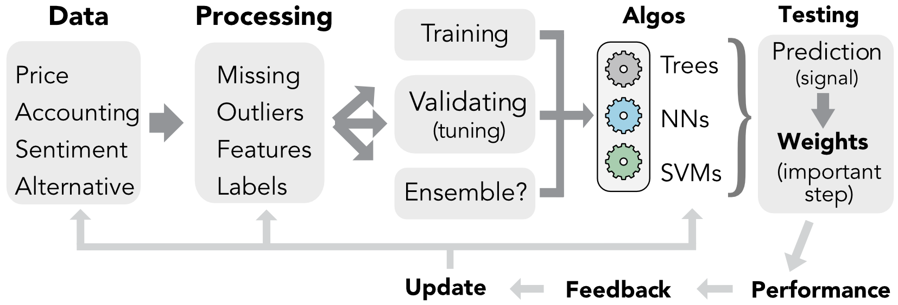

2 简介
结论常常与引言相呼应。本章是在本书写作的最后完成的。它概述的原则和想法可能比随后涵盖的技术细节的总和更相关。当结果令人失望时，我们建议读者远离算法，回到本节，以更广泛的视角了解预测建模中的一些问题。
2.1 上下文
机器学习在因子投资中的兴起源于三个有利发展的融合：数据可用性、计算能力和经济基础。
首先，数据。如今，彭博和路透社等经典供应商的竞争环境已被细分领域参与者和聚合平台入侵。此外，高频数据和衍生品报价已成为主流。因此，公司特定的属性很容易汇集，而且通常成本低廉。这意味着 (2.1) 中的 \(\mathbf{X}\) 的大小现在足够大，可以输入机器学习算法中。可以达到的数量级（2019 年）如下：对数千只股票（至少在美国上市）进行数百个月的观察，涵盖数百个属性。这形成了包含数千万个点的数据集。虽然这是一个相当高的数字，但我们强调，时间深度可能是弱点，并且在未来几十年内仍将如此，因为会计数据仅按季度发布。不用说，这个缺点对于高频策略来说并不成立。
二、计算能力，既通过硬件又通过软件。存储和处理速度不再是技术障碍，由于主要参与者（亚马逊、微软、IBM 和谷歌）和较小参与者（Rackspace、Techila）托管的服务，模型甚至可以在云上运行。在软件方面，开源已成为常态，由企业（Google 的 TensorFlow 和 Keras、Facebook 的 PyTorch、h2o 等）、大学（INRIA 的 Scikit-Learn、斯坦福大学的 CoreNLP、宾夕法尼亚大学的 NLTK）和小型研究人员小组（caret、xgboost、tidymodels 列出仅举两例）资助。因此，ML 不再是少数专家计算机科学家的私人领地，相反，任何愿意学习和编码的人都可以访问它。
最后，经济框架。金融领域的机器学习应用最初由计算机科学家和信息系统专家（例如 Braun and Chandler (1987)、White (1988)）引入，不久之后就被金融经济学学者（Bansal and Viswanathan (1993)）和对冲基金（参见例如 Zuckerman (2019)）所利用。随后，非线性关系在资产定价中变得更加主流（Freeman and Tse (1992)、Bansal, Hsieh, and Viswanathan (1993)）。这些贡献开始为自 2010 年以来蓬勃发展的更强大的方法铺平道路，本书通篇都提到了这些方法。
在 R. Arnott, Harvey, and Markowitz (2019) 的综合性论文中，第一个建议是依赖经济上有意义的模型。我们同意这一立场，并且我们在本书中做出的唯一假设是未来收益率取决于公司特征。这些特征与未来收益率之间的关系在很大程度上是未知的，并且可能随时间变化。这就是机器学习有用的原因：检测已记录资产定价异象之外的一些隐藏模式。此外，动态训练可以适应不断变化的市场条件。
2.2 投资组合构建：工作流程
建立成功的投资组合策略需要许多步骤。本书涵盖了其中的许多内容，但主要关注预测部分。事实上，大多数时候配置资产都需要形成判断，从而预测哪些资产会表现良好，哪些资产不会。在本书中，我们主要采用监督学习来预测横截面收益率。监督学习中的基线方程，
\[\begin{equation} \mathbf{y}=f(\mathbf{X})+\mathbf{\epsilon}, \tag{2.1} \end{equation}\]
用金融术语表示为
\[\begin{equation} \mathbf{r}_{t+1,n}=f(\mathbf{x}_{t,n})+\mathbf{\epsilon}_{t+1,n}, \tag{2.2} \end{equation}\] 其中，\(f(\mathbf{x}_{t,n})\)可以看作是在时间\(t\)计算出的时间\(t+1\)的预期收益率，即\(\mathbb{E}_t[r_{t+1,n}]\)。请注意，该模型是所有资产 共同的 （\(f\) 未由 \(n\) 索引），因此它与面板方法具有相似性。
建立准确的预测需要注意上述方程中的 所有 项。按时间顺序，第一步是收集数据并对其进行处理（请参阅章节 4）。据我们所知，唯一的共识是，在 \(\textbf{x}\) 方面，特征应包括文献中报告的经典预测变量：市值、会计比率、风险度量、动量代理（参见章节 3）。对于因变量，许多研究人员和从业者都使用月收益率，但其他期限的样本外表现可能更好。
虽然人们很容易认为最关键的部分是 \(f\) 的选择（它在数学上是最复杂的），但我们相信输入（即变量）的选择和工程至少同样重要。 \(f\) 的常用建模系列在 5 至 9 章节中介绍。最后，错误 \(\mathbf{\epsilon}_{t+1,n}\) 经常被忽视。人们认为普通二次规划是最好的方法（当然是最常见的！），因此主流目标是最小化平方误差。事实上，其他选项可能是更明智的选择（例如参见第 7.4.3 节）。
即使图 2.1 所示的整个过程看起来非常连续，但将其视为 一体化 更为明智。所有步骤都是相互交织的，每个部分都不应该独立于其他部分进行处理。5 问题的全局框架至关重要，从预测变量的选择到算法系列，更不用说投资组合加权方案了（后者请参阅章节 12）。

图 2.1：基于机器学习的投资组合构建的简化工作流程。
2.3 机器学习不是魔杖
预测的内在难点在于它们依赖于 过去 数据来推断有关 随后的 波动的模式。任何预测者都或多或少明确地希望过去将成为未来的良好近似。不用说，这是一个美好愿望；总的来说，预测效果很差。令人惊讶的是，这并不太依赖于计量经济学工具的复杂程度。事实上，启发式猜测往往很难被击败。
为了说明这个悲伤的事实，我们在 5 到 7 章中详细介绍的基线算法最多只能产生平庸的结果。这是故意做的。这迫使读者明白，盲目地将数据和参数提供给编码函数很少足以达到令人满意的样本外精度。
下面，我们总结了我们在金融机器学习探索之旅中学到的一些要点。
- 第一点是因果关系是关键。如果能够识别出\(X \rightarrow y\)，其中\(y\)是预期收益率，那么问题就解决了。不幸的是，因果关系很难揭示。
- 因此，研究人员大部分时间都在使用简单的 相关 模式，这些模式的信息量和鲁棒性要差得多。
- 与此相关的是，金融数据集非常嘈杂。从中提取信号是一项艰巨的任务。 无套利推理意味着，如果一个简单的模式产生持久的利润，它就会机械地迅速消失。
- Wolpert (1992a) 的免费午餐定理要求分析师对模型提出看法。这就是为什么经济或 计量经济框架 是关键。关于因变量和解释特征所做的假设和选择是决定性的。由此推论，数据是关键。给予模型的输入可能比模型本身的选择重要得多。
- 为了最大限度地提高样本外效率，正确的问题可能是套用杰夫·贝佐斯的话：什么是不会改变的？ 持久系列更有可能揭示持久的模式。
- 每个人都会犯错误。循环或变量索引中的错误是整个过程的一部分。重要的是从这些失误中学习。
最后，我们提醒读者这个显而易见的事实：没有任何东西可以取代 实践。收集和清理数据、编码回测、为机器学习模型调参、测试权重方案、调试、重新开始：这些都是绝对不可或缺的步骤和任务，必须反复进行。经验无可替代。